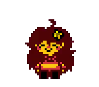
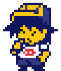

 
Your browser does not support the audio element.
Recent Developer Activity
Developer Interview with the Hunterman9924 Funkin' Interview Podcast
Stay a While (Theme of Toriel's Home) Official YT Upload